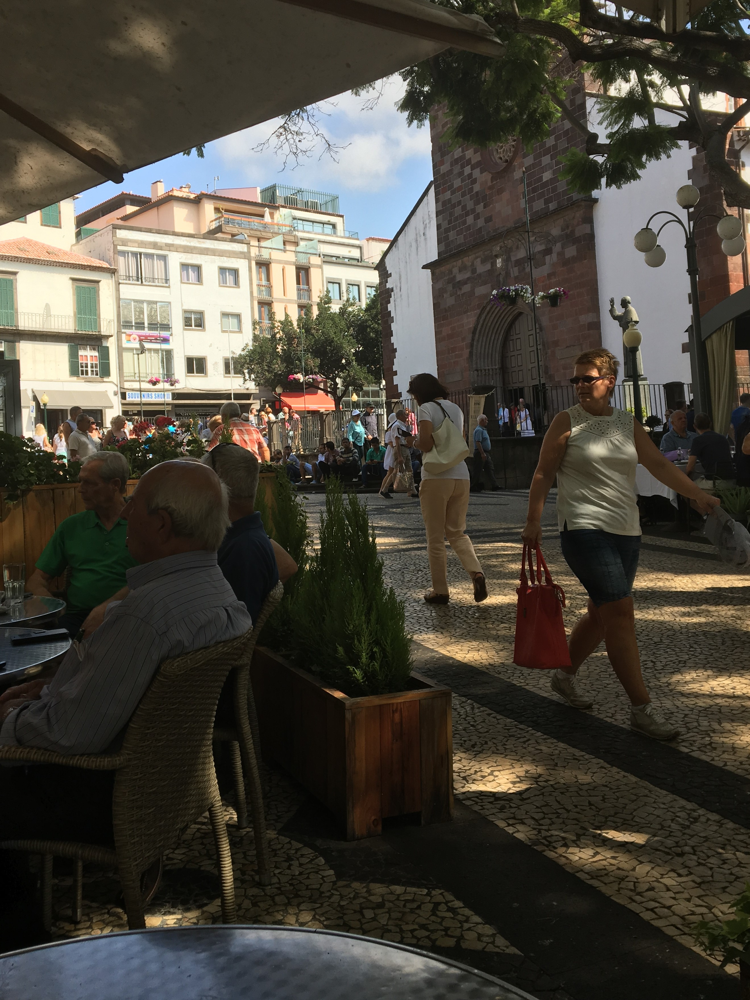
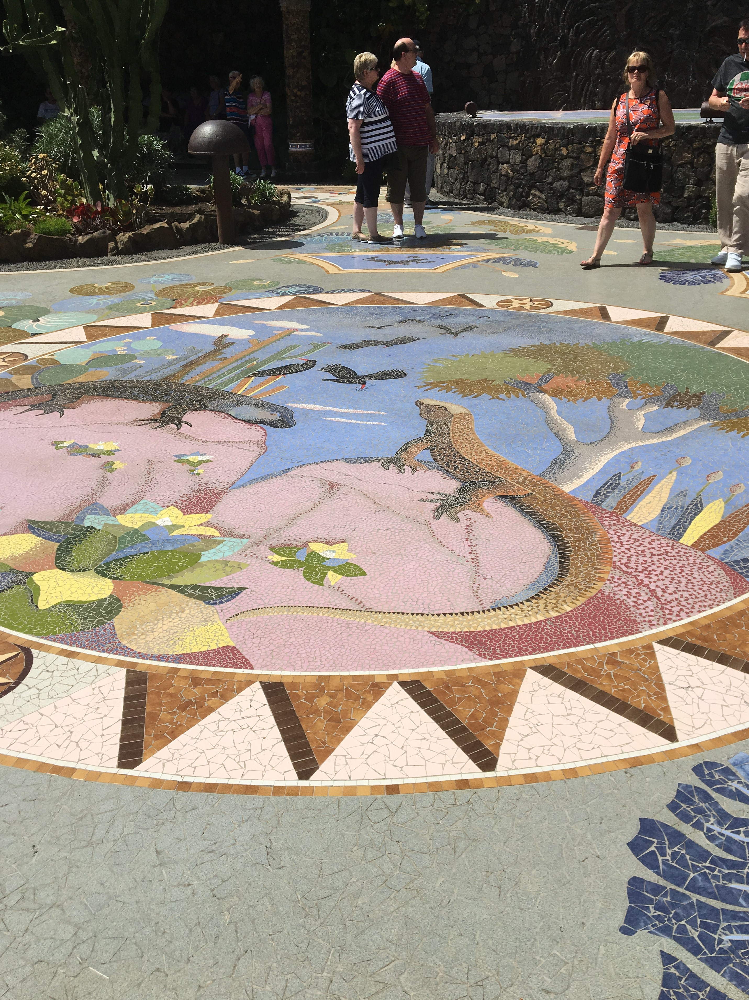

Britannia Cruise 2017
Friday September 8th 2017
As Britannia made her final approaches towards Madeira, she set a seies of westerly courses as she altered
around the south coast of the island. I woke up as the sun was rising, with views of the South coast of the
Ilha da Madeira (Island of Timber), views we saw many times from the air as we flew into Funchal airport for our family holidays. We
passed the lighthouse at the end of far east of the island at Ponta Sao Lourenco, watched planes taking off from the airport, saw how
much Canico has expanded and sat on the balcony in the early morning sun, before docking in Funchal at 9.00am.
After breakfast, Mum couldn't face the trip ashore - too many memories of Dad flooded back - so I went ashore alone. The shuttle bus
dropped me off in the commercial centre of Funchal. I went straight to the Apolo bar, opposite the cathedral, where Mum, Dad and I would
always stop for elevenses daily. Mum would have a cup of coffee, and Dad and I would have a glass or two of white wine. I ordered a mini
carafe of white wine, and raised my glass in a toast to my much missed Dad.
Funchal has changed since we started going. When we first went, no EU money had been spent. There weren't the tunnels and bridges that have made travel around the island so much easier. Getting
around the island took ages, as you had to go up hill and down dale, to get anywhere. Locals spent the night before the market on Friday,
parked up outside the market, waiting to sell their excess produce. Funchal was a gentile place where people spent the winter months, and
a few ships visited. Now, it feels like a very commercialised cruise ship port. Also, since the 2010 flash floods, the beach in Funchal
that was in front of the Vagrant Beatles boat, no longer exists. So much rubble was deposited, that the authorities decided to leave the
rubble where it was, and landscape the area to form a layered garden with an extra marina area. Hopped on the shuttle bus back to the
ship in time for our afternoon tea - sandwiches and scones, served Cornish style (Jam first, cream on top).
Mum had had a visitor during my shore trip. As the newsletter had told us, the cabin stewards, so in our case, Ted, would be washing the
outer balcony glass. I don't think he was expecting Mum to be there on her own, but chatted to her as he came in and out. We also had to deal
with the tv advert filming that was happening. Today, the Atrium area had restricted access as they were filming peole coming down the
mainstaircase in their Black Tie attire. All on Board was 5.30pm and no announcements were made about missing passengers, so we left
on time on a southerly course toward her next port of call, La Palma.
Saturday September 9th 2017
Britannia maintained a southerly course overnight and throughout the early hours of the morning, as she continued on passage to La Palma.
I woke up as we manoeuvred into position for our 9.00am arrival time in the port of Santa Cruz de la Palma. That is the capital city of
the most north-westerly island in the Canary Islands - San Miguel de la Palma, known as La Palma for short, which is the 5th largest
of the Canary Islands. Little is know of the island until 1492, when the Spanish from Castille defeated the local inhabitants, the
Guanches. It was attacked by both French and British pirates, including Francis Drake, who was repelled with the loss of his flagship.
It is the world's steepest island, and has at its centre, one of the largest volcanic craters in the world – the Caldera de Taburiente,
which is almost 5,000 feet deep, with a 5.5 mile diameter. It is also home to the Roque de los Muchachos observatory, which houses one
of the world's largest telescopes.

Mum and I went on an afternoon excursion around the island. The guide told us that the economy is split pretty much 50:50 between
tourism and agriculture. And when they say agriculture, they mean bananas. 230 million tonnes of Canaries bananas are exported annually.
That's not the bananas we're used to, that's the much smaller, not so curved, sweeter type of banana. We don't see them because under
EU rules, they can't be called bananas. Most of the banana plantations get their water from the minas galerias or water tunnels which
carry rainfall all over the island.
The roads on the island seem to be 95% uphill/downhill and bendy. The guide said they don't usually don't say left or right, but up here
and down there. The older roads, which started off as dirt tracks, all have imported Eucalyptus trees at their sides because they are
great roads driers. There are no native mammals. As a volcanic island, it was never connected to a mainland for them to arrive. The only
island mammals that did not arrive on board visiting ships, are bats, which flew from Africa. There are cedar trees on the island
which were used to produce boxes for the local Cigar industry, now mostly defunct. There are cactii, imported from California, because
they hosted the cochineal beetle, which produced the dye for the silk that was made on the island until the industrial revolution, when
the local industry died. (I did say Go Macclesfield, when the guide said that.
Our first excursion stop, having headed to the south of the island was at Fuencaliente, at Bodegas Teneguia, a co-operative winery of
over 300 members from almost every borough on the island. As the bus parked up, two pick up trucks arrived with 16 large buckets of
grapes between them, as their contribution to the harvest. They make standard wine, a white bottle of which I bought for our evening
consumption. But their claim to fame is their Malvasia wine. The sweet variety tastes very like Malmsey Madeira. I preferred the drier
version which was a lot like Verdelho Madeira. I wandered into the production area, and one of the workers wanted to give me a full tour
of the winery. I only had time to taste the grapes. Very tough skinned but quite sweet tasting grapes, with tiny little pips.
We then drove down through the lava flows resulting from a 1949 volcanic eruption at Las Manchas, to La Glorieta Square, The square has
a fantastic, colourful, almost surreal mosaic, the work of a local artist Luis Morera who was pupil of Cesar Manrique. Apparently, the
village was saved from the lava flow after the villages paraded around the village praying to Fatima whilst carrying the local Fatima
statue they had taken from the church. We then travelled up the west coast of the island, where they had bad forest fires in the summer.
The Canary pnes have very thick bark, which means they survive even the worst of the fires, and are back flourishing in a couple of
months. We returned to Santa Cruz via the tunnel that crosses the island. It is 2.7Km long, which is longer than the airport runway. We
also went past the old airport, which shut in the late 70's. Before then, the main road crossed the runway, and there was a sort of
railway crossing in place on the road. Luckily then, there were fewer planes and fewer cars. The entertainment team had a special
event on, involving costumes that lit up as they danced and sang around the pools on the Lido deck.